Altri workshop e laboratori a Torino e dintorni
Workshop di candele, saponi, fotografia, origami, rilegatura, fablab e altri laboratori a Torino e dintorni.
Cerca tutti i workshop46 attività in programma · aggiornato il 27 ottobre 2026
- dal19ottAltroAcchiappasogni: tessitura e meditazioneda lunedì 19 ottobre a giovedì 29 ottobre, 19:00–21:00Santa Rita (TO)con Barbara Perga per Anima Atelier
 mer28ottAltroHow To: taglio laser di Halloweenmercoledì 28 ottobre, 18:00–20:00Lingotto (TO)con Fablab Torino
mer28ottAltroHow To: taglio laser di Halloweenmercoledì 28 ottobre, 18:00–20:00Lingotto (TO)con Fablab Torino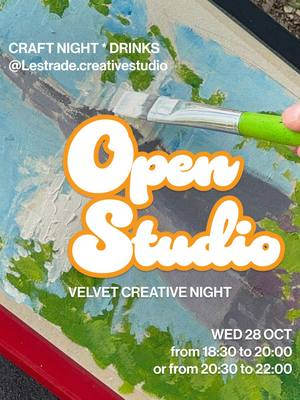
mer28ottAltroOpen Studio: serata creativa liberamercoledì 28 ottobre, 18:30–20:00Aurora (TO) · da 10 €con Velvet Truffle Riot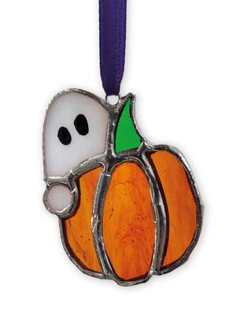
mer28ottAltroMini-workshop di vetro: soggetto di Halloweenmercoledì 28 ottobre, 19:00–21:00Torino · 35 €con Across the Glass- mer28ottAltroNon il solito Book Club: tema «Fede»mercoledì 28 ottobre, 20:00Cuneo (CN) · Gratiscon Cooperativa Il Melograno
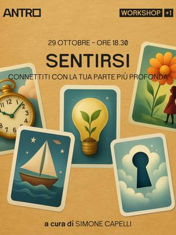
gio29ottAltroSentirsi: visualizzazione e confrontogiovedì 29 ottobre, 18:30San Salvario (TO) · Gratiscon Simone Capelli per Antro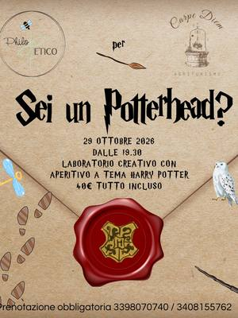
gio29ottAltroAperitivo Harry Potter: candele e pitturagiovedì 29 ottobre, 19:30Boves (CN) · 40 €con Philo Etico per Tenuta Carpe Diem- gio29ottAltroNon il solito Book Club: tema «Fede»giovedì 29 ottobre, 20:00Mondovì (CN) · Gratiscon Cooperativa Il Melograno
 gio29ottAltroZucca candela: Halloween con aperitivogiovedì 29 ottobre, 20:00–21:30Centro (TO) · 49 €con Nillybeth Lab per Solea Collection
gio29ottAltroZucca candela: Halloween con aperitivogiovedì 29 ottobre, 20:00–21:30Centro (TO) · 49 €con Nillybeth Lab per Solea Collection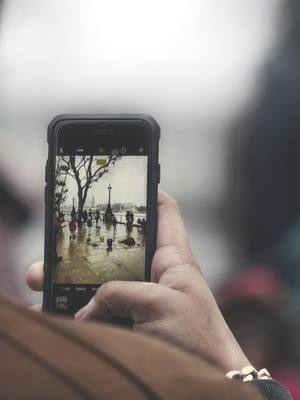
dal23ottAltroFotoracconti: fotografia con lo smartphoneda venerdì 23 ottobre a venerdì 6 novembre, ogni venerdìMirafiori (TO) · Gratiscon Fondazione CAMERA per Casa nel Parco sab31ottAltroWorkshop di saponificazione: il tuo saponesabato 31 ottobre, 09:00–13:00Pinerolo (TO) · 50 €con Courtesia per Nodo Concept Space
sab31ottAltroWorkshop di saponificazione: il tuo saponesabato 31 ottobre, 09:00–13:00Pinerolo (TO) · 50 €con Courtesia per Nodo Concept Space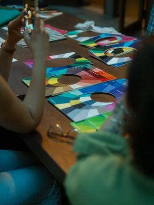
sab31ottAltroArmocromia: scopri la tua stagionesabato 31 ottobre, 10:30Quadrilatero (TO) · 39 €con BAO NOW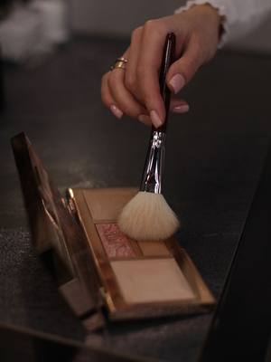
sab31ottAltroSelf make-up: lezione di truccosabato 31 ottobre, 10:30Quadrilatero (TO) · 39 €con BAO NOW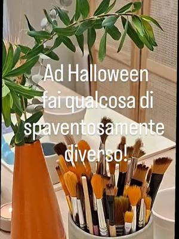
sab31ottAltroColtiviAMOoci: vasetto e seminasabato 31 ottobre, 16:00–18:30Torinocon Viviana Russo per Spazio IAIA- sab31ottAltroTarocchi di Halloween: lettura gratuitasabato 31 ottobre, 18:00Vanchiglia (TO) · Gratiscon Raffaella Siracusa per Quadratino
 sab31ottAltroHalloween Night: intaglio della zuccasabato 31 ottobre, 18:00–21:00Pino Torinese (TO) · 15 €con Il Giardino di Rosero
sab31ottAltroHalloween Night: intaglio della zuccasabato 31 ottobre, 18:00–21:00Pino Torinese (TO) · 15 €con Il Giardino di Rosero- dal4ottAltroComunicazione visiva: graphic designda domenica 4 ottobre a domenica 8 novembre, ogni domenica, 10:30–12:30Santa Rita (TO)con Ad Libitum Edizioni per Anima Atelier
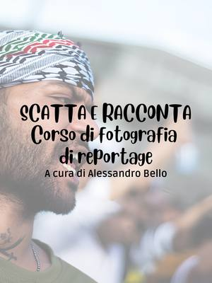
dal2novAltroScatta e Racconta: fotografia di reportageda lunedì 2 novembre, ogni lunedì, 18:30–20:00Barriera di Milano (TO) · 100 €con Alessandro Bello per Bagni Pubblici dal3novAltroGiocare coi segni: introduzione alla LISda martedì 3 novembre a martedì 15 dicembre, 18:30Vanchiglietta (TO)con Bocciofila Vanchiglietta
dal3novAltroGiocare coi segni: introduzione alla LISda martedì 3 novembre a martedì 15 dicembre, 18:30Vanchiglietta (TO)con Bocciofila Vanchiglietta gio5novAltroSaldo! Vol. 1: saldatura a stagno di basegiovedì 5 novembre, 18:00–20:00Lingotto (TO) · da 10 €con Silvio Navaretti per Fablab Torino
gio5novAltroSaldo! Vol. 1: saldatura a stagno di basegiovedì 5 novembre, 18:00–20:00Lingotto (TO) · da 10 €con Silvio Navaretti per Fablab Torino- sab7novAltroBook Club 2.0: «L’era dell’Acquario»sabato 7 novembre, 17:00San Salvario (TO) · Gratiscon Book Club 2.0
 dom8novAltroWorkshop di fotografia: ritratto all’apertodomenica 8 novembre, 09:00–13:00San Salvario (TO) · 97 €con Aldo Diazzi per WorkshopFotografici.eu
dom8novAltroWorkshop di fotografia: ritratto all’apertodomenica 8 novembre, 09:00–13:00San Salvario (TO) · 97 €con Aldo Diazzi per WorkshopFotografici.eu dom8novAltroWorkshop di street photography in centrodomenica 8 novembre, 14:00–17:00Centro (TO) · 55 €con Aldo Diazzi per WorkshopFotografici.eu
dom8novAltroWorkshop di street photography in centrodomenica 8 novembre, 14:00–17:00Centro (TO) · 55 €con Aldo Diazzi per WorkshopFotografici.eu dom8novAltroTessere la storia: intreccio fotograficodomenica 8 novembre, 14:30–17:30Ivrea (TO) · da 15 €con Anastasia Moro per Open Art House
dom8novAltroTessere la storia: intreccio fotograficodomenica 8 novembre, 14:30–17:30Ivrea (TO) · da 15 €con Anastasia Moro per Open Art House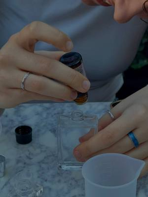
dom8novAltroCreazione di un profumo: profumo e aperitivodomenica 8 novembre, 18:00Quadrilatero (TO) · 39 €con BAO NOW mar10novAltroThe Fragrance Bar: profumatore per la casamartedì 10 novembreSan Salvario (TO) · 50 €con Aperi Pods
mar10novAltroThe Fragrance Bar: profumatore per la casamartedì 10 novembreSan Salvario (TO) · 50 €con Aperi Pods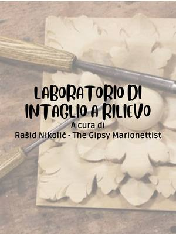
dal10novAltroIntaglio a rilievo: bassorilievi in legnoda martedì 10 novembre a martedì 1 dicembre, ogni martedì, 19:00–21:30Torinocon Rašid Nikolić (The Gipsy Marionettist) per Bagni Pubblici- gio12novAltroCrea la tua Luna: candela rituale e oracoligiovedì 12 novembre, 20:00Moncalieri (TO)con Soffio nel Vento con Tarot With Love
 ven13novAltroWorkshop di origami: paralume da tavolovenerdì 13 novembre, 17:00–19:00San Salvario (TO) · 40 €con Origami Pop
ven13novAltroWorkshop di origami: paralume da tavolovenerdì 13 novembre, 17:00–19:00San Salvario (TO) · 40 €con Origami Pop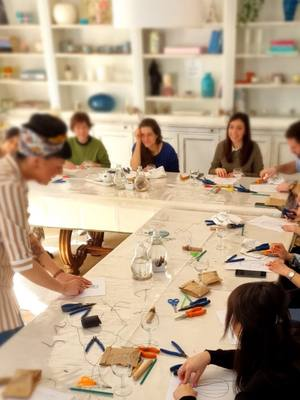
sab14novAltroWorkshop di candele: fatte a manosabato 14 novembre, 09:00–13:00Borgo Po (TO) · esauritocon Il Tempio Creativo per TObed sab14novAltroArmocromia: scopri la tua stagionesabato 14 novembre, 10:30Quadrilatero (TO) · 39 €con BAO NOW
sab14novAltroArmocromia: scopri la tua stagionesabato 14 novembre, 10:30Quadrilatero (TO) · 39 €con BAO NOW- lun16novAltroIl mistero dei tarocchi: simboli e letturelunedì 16 novembre, 20:00Santa Rita (TO)con Nume Olistica per Anima Atelier
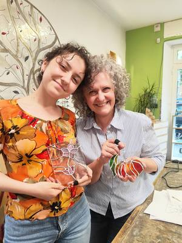
sab21novAltroWorkshop di vetro Tiffany: oggetto da zerosabato 21 novembre, 10:00–17:00Torino · 130 €con Across the Glass sab21novAltroCreazione di un profumo: profumo e cremasabato 21 novembre, 10:30Quadrilatero (TO) · 39 €con BAO NOW
sab21novAltroCreazione di un profumo: profumo e cremasabato 21 novembre, 10:30Quadrilatero (TO) · 39 €con BAO NOW- sab21novAltroWorkshop di origami: paralume dipintosabato 21 novembre, 16:00–19:00San Salvario (TO) · 40 €con Origami Pop
 mer25novAltroHow To: stampa 3D per iniziaremercoledì 25 novembre, 18:00–19:30Lingotto (TO) · esauritocon Fablab Torino
mer25novAltroHow To: stampa 3D per iniziaremercoledì 25 novembre, 18:00–19:30Lingotto (TO) · esauritocon Fablab Torino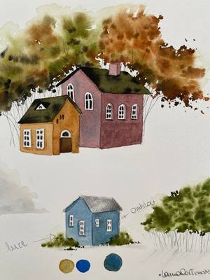
sab28novAltroLanterne di Natale: laboratorio creativosabato 28 novembre, 09:30–17:00Borgo Po (TO)con Laura Cortinovis per TObed- sab28novAltroKREA: candele da personalizzaresabato 28 novembre, 15:30–17:30Pianfei (CN)con Philo Etico per Alter Ego
- dom29novAltroIntensivo di origami: lampada con telaiodomenica 29 novembre, 14:00–19:00San Salvario (TO) · 80 €con Origami Pop
 mer9dicAltroHow To: fresatrice CNC di Natalemercoledì 9 dicembre, 18:00–20:00Lingotto (TO)con Damiano Frison per Fablab Torino
mer9dicAltroHow To: fresatrice CNC di Natalemercoledì 9 dicembre, 18:00–20:00Lingotto (TO)con Damiano Frison per Fablab Torino- sab12dicAltroWorkshop di vetro Tiffany: speciale Natalesabato 12 dicembre, 10:00–17:00Torino · 130 €con Across the Glass
 sab26dicAltroPhotowalk: passeggiata fotografica in grupposabato 26 dicembre, 10:30–12:30Quadrilatero (TO) · 2 €con BlaBla Photowalk Events
sab26dicAltroPhotowalk: passeggiata fotografica in grupposabato 26 dicembre, 10:30–12:30Quadrilatero (TO) · 2 €con BlaBla Photowalk Events- datada confermareAltroCascina Roccafranca: corsi della stagioneData da confermareMirafiori (TO)con Cascina Roccafranca
 dataa sceltaAltroTappezzeria e restyling: pouf e mobiliData a sceltaBarriera di Milano (TO) · da 20 €con Magazzini Tessili
dataa sceltaAltroTappezzeria e restyling: pouf e mobiliData a sceltaBarriera di Milano (TO) · da 20 €con Magazzini Tessili- datada confermareAltroCorso di fotografia: fermare un’emozioneData da confermareSan Mauro Torinese (TO)con Davide Furia per upTOyou
- datada confermareAltroLaboratorio di origami: dalla carta all’oggettoData da confermareSan Mauro Torinese (TO)con Golnaz Esmaeeli per upTOyou